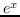
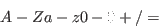
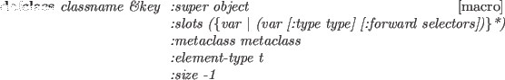
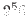

Subsections
Echo-streams and concatenated-streams are not available.
Predefined streams are following:
- *standard-input*
- stdin fd=0
- *standard-output*
- stdout fd=1
- *error-output*
- stderr fd=2 bufsize=1
- *terminal-io*
- two-way stream made of
*standard-input* and *standard-output*
streamp object [function]
-
-
Any object created from stream, io-stream,
or their subclasses returns T.
input-stream-p object [function]
-
-
T if object is a stream and capable of reading.
output-stream-p object [function]
-
-
T if object is a stream and capable of writing.
io-stream-p object [function]
-
-
T if object is a two-way stream.
open path &key :direction :input [function]
:if-exists :new-version
:if-does-not-exist
:permission #o644
:buffer-size 512
-
- Open makes a stream associated with a file designated by path.
path may either be a string or a pathname.
Direction should be one of :input, :output or :io.
Several open options, :append, :new-version, :overwrite, :error
and nil are allowed for :if-exists parameter.
However, this parameter is ignored when direction is :input.
Alternatives for :if-does-not-exist are
:error, :create and nil.
:new-version, :rename and :supersede
are not recognized.
By default, the file is overwritten if direction is either
:output or :io when the file exists.
For :input files, an error is reported when the file does not exist.
To know the existence of a file, probe-file can be used.
Default value for buffer-size is 512 bytes,
and #O644 for :permission.
SunOS4 allows to open as many as sixty files at the same time.
with-open-file (svar path . open-options) &rest forms [macro]
-
-
A file named path is opened with open-options and the
stream is bound to svar.
Then forms are evaluated.
The stream is automatically closed when evaluation of forms finishes
or exits with throw, return-from or error.
With-open-file is a macro defined by unwind-protect with close
in its clean-up forms.
close stream [function]
-
- closes the stream, and returns T if successful.
The stream may have already been closed, in which case nil is returned.
Streams are automatically closed by GC if there is no reference to
that stream object.
make-string-input-stream string [function]
-
-
makes an input stream from a string.
make-string-output-stream size [function]
-
-
makes an output stream to a string of size length.
Actually, the length is automatically expanded, so size is only
advisory information to allocate string at initialization.
get-output-stream-string string-stream [function]
-
-
gets a string out of a string-stream.
make-broadcast-stream &rest output-streams [function]
-
-
makes a broad-cast stream which forwards all the messages written to
this stream to each of output-streams.
Reader's global variables:
- *read-base*
- number base to be read; default is decimal ten
- *readtable*
- current readtable which determines reader syntax
Reader's default macro characters:
( read list
" read string
' read quoted expression
# dispatch macro
; comment until end of line
` back-quote
, list-time eval
@ append
% read C-like mathematical forms
Escape characters:
 single character escape
multiple character escape
When an unescaped symbol is read,
all the constituent characters are converted to upcase by default,
and upcase-character symbol is stored internally.
For example, 'abc and 'ABC are regarded as the same symbol.
Escape is necessary to distinguish between them.
' ABC, 'ABC and 'abc are identical,
while 'abc and 'abc are different symbols.
By default, even if you enter a symbol with upcase letters,
When symbols are printed,
EusLisp's printer converts them into lowercase from
internal upcase representation.
This conversion is
suppressed by setting *print-case* to :UPCASE.
ABC, 'ABC and 'abc are identical,
while 'abc and 'abc are different symbols.
By default, even if you enter a symbol with upcase letters,
When symbols are printed,
EusLisp's printer converts them into lowercase from
internal upcase representation.
This conversion is
suppressed by setting *print-case* to :UPCASE.
Note that 10. is read as integer 10, not floating 10.0.
Since ':' is reserved for package marker, it must be escaped
when used as a constituent of a symbol, like '.
This restriction is imposed not by the syntax of the character ':',
but by the attribute which determines the alphabetical order and the meaning of
the letter.
The attributes of characters are hardwired in the reader.
Thus, although you may change the syntax of a certain character by
creating a new readtable by copy-readtable and
resetting the syntactic meaning for the character by set-syntax-from-char,
you cannot change its attribute anyway.
In other words, digits are always digits, alphabets are alphabets,
and we cannot use letters like '#$%@' to represent numbers.
String is denoted by two double quotes '"' at the beginning and at the end.
No case conversion is taken inside the quotes.
A back-slash 'ís used as an escape to include a double quote.
Therefore, "He said, Ï like Lisp.SPMquot;" is read as a string
including two double quotes.
To enter a back-slash, two back-slashes are needed.
Note that shift-JIS encoding of Japanese text is inadequate for this
read-string convention, since some characters happen to have the
code of a back-slash (#x5c) as their second byte.
Use of EUC coding is preferrable.
% is an extended read-macro character specific to EusLisp.
Preceding % to a mathematical formula written in infix notation,
the formula is converted to lisp's prefix form. For an instance,
%(1 + 2 * 3 / 4.0) is transformed to
(+ 1 (/ (* 2 3) 4.0)) and 2.5 is resulted.
C-like function calls and array references are converted to lisp forms, too,
thus, %(sin(x) + a[1])
is evaluated to (+ (sin x) (aref a 1)).
Functions having more than one arguments and arrays of more than two
dimeisions are notated as func(a b c ...) and ary[1 2 3 ...],
not func(a,b,c) nor ary[1][2][3].
Relative expressions and assignments are also properly handled, so,
%(a  b) is converted to ( a b),
and %(a[0] = b[0] * c[0]) is to
(setf (aref b 0) (* (aref b 0) (aref c 0))).
A simple optimization is performed to reduce duplicated function calls and
array references.
%(sin(x) + cos(x) / sin(x)) is converted into
(let* ((temp (sin x))) (+ temp (/ (cos x) temp))).
Dispatch macros are preceeded by the # character.
A number (integer) argument can be given between # and a dispatch macro
character.
This means that any digits (0 .. 9) cannot be defined as dispatch
macro characters.
Reader's standard dispatch macro characters follow:
- #nA(..)
- array
- #B
- binary number
- #D
- degree to radian conversion; #D180 = 3.14
- #F(...)
- floatvector
- #nF((..))
- float array; #2F((..) (..)) is matrix
- #I(...)
- integer-vector
- #nI((...))
- integer array
- #J(...)
- general object #J(myclass ....); obsolete
- #O
- octal number
- #P
- pathname
- #R
- radian to degree conversion; #R3.14 = 180.0
- #S(classname slotname1 val1 slotname2 val2 ...)
- structure (any object)
- #V(...)
- vector #V(vectorclass ...)
- #X
- hexadecimal number
- #(...)
- vector
- #n#
- label reference
- #n=
- label definition
- #'
- FUNCTION; compiled-code or lambda-closure
- #
- character
- #,
- read-time evaluation
- #+
- conditional read (positive)
- #-
- conditional read (negative)
- #*
- bit vector
- #:
- uninterned symbol
- #...#
- comment; can be nested
Some reader functions have eof-error-p, eof-value and
recursive-p parameters.
The first two parameters control the behavior when the reader encounters
with end-of-file.
The default of eof-error-p is t, which causes an error at eof.
If you want to know the occurrence of eof and don't want the system's
error-handler to snatch control, specify nil to eof-error-p.
Thus, when an eof appears during reading, the reader returns
the eof-value instead of entering an error loop.
Eof-value is defaulted to nil.
So, you cannot know if nil is actually read, or eof appears.
To distinguish them, give a value which can never appear in the stream.
Use cons or gensym to make such unique data object.
Recursive-p is often used in read-macro functions,
which call reader recursively.
Non-nil value of recursive-p tells the reader that the read operation
has been started somewhere else and it should not reset
the internal table for reading forms labeled by #n= and #n#.
read &optional stream (eof-error-p t) (eof-value nil) recursive-p [function]
-
-
reads one S-expression.
read-delimited-list delim-char &optional stream recursive-p [function]
-
-
reads s-expression which is delimited by delim-char.
This is useful to read comma-separated list, or to read a sequence
terminated by a special character like #
].
read-line &optional stream (eof-error-p t) (eof-value nil) [function]
-
-
reads a line which is terminated by a #
newline.
The string returned does not contain the last newline character.
read-char &optional stream (eof-error-p t) (eof-value nil) [function]
-
-
reads one character and returns its integer representation.
read-from-string string &optional (eof-error-p t) (eof-value nil) [function]
-
-
reads one s-expression from string.
Only the first s-expression can be read.
If successive read operations need to be performed on a string
containing more than one expression,
use string-stream made by make-string-input-stream.
unread-char char &optional stream [function]
-
-
puts the char back to the stream.
More than one characters cannot be put back successively.
peek-char &optional stream (eof-error-p t) (eof-value nil) [function]
-
-
reads a character from the stream without removing it from the buffer
of the stream.
This is equivalent to a read-char followed by a unread-char.
y-or-n-p &optional format-string &rest args [function]
-
-
prints format-string and args on your terminal,
and asks ``y-or-n''.
Repeat query until your response begins with either of ``y'' or ``n'',
and returns T or NIL. Case does not matter.
yes-or-no-p &optional stream [function]
-
-
prints format-string and args on your terminal,
and asks ``yes-or-no''.
Repeat query until your response is either of ``yes'' or ``no'',
and returns T or NIL.
Case does not matter.
In the readtable manipulating functions, the default value of readtable
is the value of the global variable *readtable*.
readtable-p x [function]
-
- T if x is an readtable.
copy-readtable &optional from-readtable to-readtable [function]
-
-
If no to-readtable is specified, a new one is created.
All the information in from-readtable is transferd to to-readtable.
The information included is, syntax table, read-macro table and
dispatch-macro table, each of which has 256 elements.
set-syntax-from-char to-char to-char [to-readtable from-readtable] [function]
-
- copies syntax and read-macro definition of from-char in
from-readtable to that of to-char in to-readtable.
set-macro-character char func [non-teminating-p readtable] [function]
-
-
defines func as the read-macro function for char.
get-macro-character char [readtable] [function]
-
-
returns the read-macro function for char.
set-dispatch-macro-character dispchar char func [readtable] [function]
-
-
defines func as the dispatch read-macro function for
the combination of dispchar and char.
get-dispatch-macro-character dispchar char [readtable] [function]
-
-
returns the dispatch read-macro function for
the combination of dispchar and char.
The followings are special variables controlling printer's behaviors.
- *print-case*
- if this is :downcase,
all symbols are printed in lowercase
althought symbols are represented in uppercase
internally unless they are escaped.
- *print-circle*
- print objects preserving recursive refernce
- *print-object*
- print the details of all objects
- *print-structure*
- print objects using #s format.
- *print-level*
- printable depth of a sequence
- *print-length*
- printable length of a sequence
- *print-escape*
- currently not used
- *print-pretty*
- currently not used
- *print-base*
- number base in printing; defaulted to decimal ten
In order to print objects containing recursive references
so that they can be read back again,
print the objects with both *print-circle* and
*print-structure* set to T.
Although most of the user defined objects can be printed in re-readable forms,
classes, compiled-codes and packages cannot be dumped in that way,
because classes and compiled-code include unrelocatable
executable codes, and the rereading packages
damages the consistency among symbols.
print obj &optional stream [function]
-
-
is prin1 followed by terpri.
prin1 obj &optional stream [function]
-
-
outputs one s-expression in the format that they can be read back again
by read.
The format includes slashes (escapes) and quotation marks.
princ obj &optional stream [function]
-
-
same as print except that princ does not add escape or quote.
Objects printed by princ cannot be read back.
For example, the output of (princ 'abc) is identical with that of
(princ "abc") and the reader cannot distinguish between them.
terpri &optional stream [function]
-
- outputs #
newline and
flush stream.
finish-output &optional stream [function]
-
- flushes output stream.
princ-to-string x &optional (l 16) [function]
-
-
prin1-to-string x &optional (l 16) [function]
-
- makes a string-output-stream, writes to it, and get-output-stream-string.
format stream format-string &rest args [function]
-
-
Format only recognizes A(ascii), S(S-expression), D(decimal),
X(hexadicimal), O(octal), C(character), F(floating), E(exponential),
G(general float), V(dynamic number parameter), T(tab)
and %(newline) format specifiers.
(format t "~s ~s ~a ~a ~10,3f~%" "abc" 'a#b "abc" 'a#b 1.2)
---> "abc" |A#B| abc a#b 1.200
pprint obj &optional (stream *standard-output*) (tab 0) (platen 75) [function]
-
- pretty-prints obj.
print-functions file &rest fns [function]
-
-
write the "defun" forms of function definitions of fns out to file.
write-byte integer stream [function]
-
-
write-word integer stream [function]
-
-
write-long integer stream [function]
-
-
write integer as a one-, two- or four-byte binary.
spaces n &optional stream [function]
-
-
outputs spaces n times.
pf func &optional stream *standard-output*) [macro]
-
-
pretty-prints a function. Compiled function cannot be printed.
pp-method class selector &optional (stream *standard-output*) [function]
-
-
pretty-prints the method defined in class by the name of
selector.
tprint obj tab &optional (indent 0) (platen 79) (cpos 0) [function]
-
- print obj in tabular format.
print-size obj [function]
-
-
returns inexact length of obj when it is printed.
InterProcess Communication and Network
EusLisp provides four kinds of IPC facilities,
shared memory, message-queue, FIFO and socket.
2Normally, efficiency decreases in this order.
If you are using multithread facility, synchronization functions
described in the section 14 are also used for communications.
Availability of these facilities depends on the configuration and
the version of Unix.
EusLisp supports the shared memory provided by SunOS's mmap,
not by System5's shmem.
Shared memory is allocated by the map-file function.
Map-file maps a file into the EusLisp process memory space
and an instance of foreign-string is returned.
Data can be written and retrieved using string functions on this
foreign-string.
Since shared memory is allocated at system-dependent page boundary,
you should not specify the map address.
Mapping a file with the :share keyparameter set to NIL
or :private set to T
means the file should be accessed privately (exclusively).
Since this is not useful for the purpose of memory sharing,
the default value of :share key is T.
When a file is shared between two users, the read/write permission
must be properly set for both users.
Unfortunately, SunOS does not support file sharing through networks
between different workstations.
Example programs to share a file of 64 byte length between two
euslisp are shown below.
;; Create a file of 64 bytes
(with-open-file (f "afile" :direction :output) (princ (make-string 64) f))
;; Map it
(setq shared-string1 (map-file "afile" :direction :io))
;;
;; In another process
(setq shared-string2 (map-file "afile" :direction :io))
Then, data written to shared-string1
immediately appears in shared-string2, and vice versa.
Writing to a foreign string can be made by
replace or setf in conjunction with aref.
map-file filename &key (direction :input) length (offset 0) (share t)
(address 0) [function]
-
-
maps the file named filename to memory space.
Filename can be either of a local file, an NFS-mounted remote file,
or a memory device in /dev.
A foreign-string, whose elements can be accessed by aref,
is returned.
Writing data into a foreign-string mapped by map-file with
direction=:input will result a segmentation fault.
A message-queue is created by make-msgq-input-stream or make-msgq-output-stream.
Each of these returns an instance of file-stream, which can then
accept read and print operations like other streams connected to files.
The fname slot of message-queue stream is set to the key when it is
created.
To make a stream to FIFO,
you first create a FIFO node with unix:mknod function
by setting its second argument mode=#o10000,
and you open it as a normal file.
Message-queues and FIFOs are created locally on a machine and
only provide communication channels within the machine.
Note that message-queues and FIFOs are not removed from the system
even after the owner process terminates.
Explicit use of unix:msgctl or ipcrm command
is needed to delete them.
make-msgq-input-stream key &optional (buffer-size 128) [function]
-
-
returns an input file-stream which is connected to a message-queue
identified by key.
make-msgq-output-stream key &optional (buffer-size 128) [function]
-
-
returns an output file-stream which is connected to a message-queue
identified by key.
The socket is more versatile than other communication mechanisms
because it can operate either host-locally (in unix domain) or
network-widely (in internet domain).
Connection-oriented socket (SOCK_STREAM) and
unconnected socket (SOCK_DGRAM) are supported.
In both cases,
you must first create a socket address object
by make-socket-address function,
which returns an instance of socket-address.
In unix domain, a socket address is specified by a path-name
in the unix file system.
In internet domain, the address is specified by combining
the host machine name, the port number, and optionally the protocol number.
If the port number is defined in /etc/services, it can be referred through
the symbol specified by the service name.
The function unix:getservbyname can be used
to retrieve the port number from the symbolic service name.
Port numbers less than 1024 are reserved for root users,
and non-priviledged users are advised to use port numbers greater than 1024
for their private sockets.
Although connected streams provide bidirectional communication channels,
the connection establishment operation is asymmetric.
One endpoint is refered
to server and other to client.
The endpoint on the behalf of the server
(service access point) must be first established.
It is created by make-socket-port function which returns an instance
of socket-port.
The socket-port object is then used to accept connections from
one or more clients by make-server-socket-stream.
A call to make-server-socket-stream may be blocked
until a connection request from a client really happens.
Clients can make socket streams by
make-client-socket-stream specifying a socket-address.
;;; an example of IPC through a socket stream:
;;; server side
(setq saddr (make-socket-address :domain af_inet :host "etlic2" :port 2000))
(setq sport (make-socket-port saddr))
(setq sstream (make-server-socket-stream sport))
;;;
;;; client side
(setq caddr (make-socket-address :domain af_inet :host "etlic2" :port 2000))
(setq cstream (make-client-socket-stream caddr))
In applications like a database or an environment simulator for mobile
robots, multiple connection service
between one server and many clients is required.
This type of server can be programmed by the open-server function.
From the current host name and given port number,
open-server creates a socket port (service access point)
on which connection requests are listened for.
Since this port is attributed to be asynchronous,
open-server is not blocked and returns immediately.
Thereafter, each connection request interrupts EusLisp's main loop,
and an socket-stream is created asynchronously.
This socket-stream also works in asynchronous mode:
the asynchronous input processing function which is the second argument
to open-server is invoked whenever new data appear in this stream.
Up to 30 connections can be established so that
as many clients can access the server's data at the same time.
;; server side
(defun server-func (s)
(case (read s) ... ;do appropriate jobs according to inputs
(open-server 3000 #'server-func)
... do other jobs in parallel
;; client-1 through client-N
(setq s (connect-server "etlmmd" 3000))
(format s "..." ...) (finish-output s) ;issue a command to the server
(read s) ;receive response
In contrast to the connection-oriented streams which provide reliable
communication channels,
the connectionless sockets are unreliable: messages may be lost,
duplicated, and may arrive out-of-order.
The connectionless sockets, however, have advantages that they
do not need to assign file descriptor to each connection,
and sending process is never blocked even if the receiver is not
reading data and the buffer overflows.
To make connectionless sockets, use the following procedures.
Messages are transferred by the unix:sendto and unix:recvfrom.
;;; receiver side
(setq saddr (make-socket-address :domain af_inet :host "etlic2" :port 2001))
(setq sock (make-dgram-socket saddr))
(unix:recvfrom sock)
;;;
;;; client side
(setq caddr (make-socket-address :domain af_inet :host "etlic2" :port 2001))
(setq sock (unix:socket (send caddr :domain) 2 0))
(unix:sendto sock caddr "this is a message")
;;;
;;; how to use echo service which is registered in /etc/services.
(setq caddr (make-socket-address :domain af_inet :host "etlic2"
:port (car (unix:getservbyname "echo"))))
(setq echosock (unix:socket (send caddr :domain) 2 0))
(unix:sendto echosock caddr "this is a message")
(unix:recvfrom echosock) --> "this is a message"
make-socket-address &key domain pathname host port proto service [function]
-
-
makes a sockaddr structure.
make-socket-port sockaddr [function]
-
- makes a server-side socket port
which is used to establish a connection with a client.
make-server-socket-stream sockport &optional (size 100) [function]
-
-
accepts a connection from a client and returns a two-way stream.
make-client-socket-stream sockaddr &optional (size 100) [function]
-
-
connects to a server port and returns a two-way stream.
open-server port remote-func [function]
-
-
prepares a socket port designated by the host name and port
in internetnet domain, and waits for the connection requests
asynchronously.
Each time a connection is requested, it is accepted and a new
socket-stream is opened.
When a message arrives at the socket-port, remote-func
is invoked with the socket port as the argument.
connect-server host port [function]
-
-
This is a shorhand of successive calls to make-socket-address and
make-client-socket-stream.
A socket-stream for a client to communicate with the server
specified by host and port is returned.
The port is made in internet domain.
select-stream stream-list timeout [function]
-
-
finds a list of streams which are ready for input operation, in
stream-list.
NIL is returned if timeout seconds have expired before any
streams become ready.
Select-stream is useful when you choose active streams
out of a list of input-streams on which input operation becomes
possible asynchronously.
Timeout specifies the time when the select operation is aborted.
It can be a float number.
If no timeout is specified, select-stream blocks
until input arrives at least one stream.
If timeout is specified and no input appears on any streams,
select-stream aborts and returns NIL.
def-async stream function [macro]
-
-
defines function to be called when data arrives at stream.
stream is either a file-stream or a socket-port.
When data comes to the file-stream or a connection request appears on
the socket-port, function is invoked with the stream as its argument.
This macro installs a SIGIO handler that dispatches to user supplied
function which is expected to perform actual input operation,
and uses unix:fcntl on stream to issue SIGIO
asynchronously when stream becomes ready to be read.
Pathnames
Pathnames give the way to analyze and compose file names OS-independently.
A typical path name is assumed to be consisted of following components:
host:device/directory1/.../directory-n/name.type.version.
Since EusLisp only runs on Unix, host, device and version fields are ignored.
The pathname function decomposes a string into a list of directory
components, name and type, and returns a pathname object, which
is printed as a string prefixed by #P.
pathnamep name [function]
-
-
returns T if name is a pathname.
pathname name [function]
-
-
name is pathname or string.
name is converted to pathname.
To indicate the last name is a directory name, don't forget to suffix with "/".
The inverse conversion is performed by namestring.
pathname-directory path [function]
-
-
returns a list of directory names of path.
Root directory (/) is represented by :ROOT.
path can be either of string or pathname.
pathname-name path [function]
-
-
returns the file-name portion of path.
path can be either of string or pathname.
pathname-type path [function]
-
-
extracts the file-type portion out of path.
path can be either of string or pathname.
make-pathname &key host device directory name type version
defaults [function]
-
-
makes a new pathname from directory, name and type.
On unix, other parameters are ignored.
merge-pathnames name
&optional (defaults *default-pathname-defaults*)) [function]
-
-
namestring path [function]
-
-
returns string representation of path.
parse-namestring name [function]
-
-
truename path [function]
-
-
tries to find the absolute pathname for the file named path.
URL-Pathnames
URL-Pathname is an extension of pathname to have slots for a protocol
and a port.
A URL is composed of six components;
protocol, server, port, directories, filename, and file-type, like
http://shock2.etl.go.jp/matsui/index.html.
url-pathname name [function]
-
-
name is pathname or string.
name is converted to pathname.
To indicate the last name is a directory name, don't forget to suffix with "/".
The inverse conversion is performed by namestring.
digits-string n digits &optional (base 10)) [function]
-
- generates a string representing the integer n in n columns of
digits.
Zeros are padded before the number if n is too small to represent
in digits.
sequential-file-name head num extension &optional (digits 4)) [function]
-
- generates a filename string with an advancing number part.
This is similar to gentemp, but differs in that an extension can be specified
and the result is a string.
timed-file-name head extension &optional (dt (unix:localtime))) [function]
-
- generates a filename string that consists of head, hour, minute, second,
and extension. For example, (timed-file-name "img" "jpg") generates
"img191015.jpg" at 7:10:15 pm.
dated-file-name head extension &optional (dt (unix:localtime))) [function]
-
- generates a filename string formatted as
"headyymmmdd.extension", where yy is the lower two digits of the year,
mmm is the abbreviated month name, and dd is the date.
probe-file path [function]
-
- checks if a file named path exists.
file-size path [function]
-
- returns the size of the file named path
in bytes.
directory-p path [function]
-
- returns T if path is a directory,
NIL otherwise even path does not exist.
find-executable file [function]
-
-
returns the full pathname for the Unix command named file.
Find-executable provides almost the same functionality with
Unix's 'which' command that searches the executable file in your path list.
file-write-date file [function]
-
-
returns the integer representation of the time
when the file was last modified.
String representation can be obtained by
(unix:asctime (unix:localtime (file-write-date file)))
file-newer new old [function]
-
-
returns T if the new file is modified more recently than
the old file.
object-file-p file [function]
-
- returns T if the file is
an object file by looking at the file's magic number in the header.
directory &optional (path ".") [function]
-
-
makes a list of all the files in the path.
dir &optional (dir ".") [function]
-
-
prints file names in the specified directory.
Travis CI User
2017-03-07